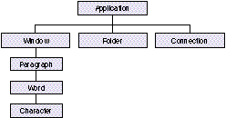

Now that AppleScript is fast becoming an important core technology of the Macintosh
operating system, more and more developers are making their applications scriptable
or improving their scriptability. The way you design your scripting implementation
can make the difference between satisfaction and frustration for users who want to
script your application. The tips presented in this article will help you do it right.
A well-designed user interface enables users to discover your application's
capabilities and take full advantage of them. Likewise, the way you design your
scripting implementation determines the degree of success users will have in
controlling your application through scripting -- writing simple, understandable,
and, in most cases, grammatically correct sentences.
And just as the consistency of its user interface has been perhaps the most important
factor in the Macintosh computer's ongoing adoption and success, consistency is an
essential part of the world of scripting. It's highly important for users (by which I
mean anyone who writes scripts, including power users, solutions providers,
consultants, in-house developers, resellers, and programmers) to feel as if they're
using a single language, regardless of which application they're scripting. As a
developer, you have a responsibility to extend the AppleScript language in a consistent
manner.
My purpose in this article, which might be considered a first attempt at some "human
scriptability guidelines," is to offer conventions, suggestions, and general guidelines
that you can follow to maintain consistency with the AppleScript language. I also give
some suggestions for redoing a poorly done scripting implementation. (I'm assuming
you're already convinced that you should make your application scriptable; if you're
not, see "Why Implement Scriptability?") The result of doing all this work is that the
AppleScript language feels consistent across applications of different types produced
by different vendors.
______________________________
If you're still wondering why you should implement scriptability in your
application, consider these reasons:
It's important to implement AppleScript support in your core application,
rather than through an external API, as some databases such as 4th Dimension
and Omnis do. When your core application isn't Apple event-aware, two things
happen: (1) no dictionary resides in the application itself, and (2)
functionality is usually limited. Users have difficulty doing decent scripting of
these applications, by and large. If you simply must support Apple events
through an external API, at least support the dynamic terminology mechanism
for your extensions.
The bottom line is this: If your application isn't scriptable soon, you'll be left
out in the cold. If you do the work now, not only will you open up more uses for
your application in the "big picture," but you'll also be that much closer to
implementing what you need in order to support several other technologies. So
please, don't put it off!
______________________________
A good scripting implementation consists of two parts:
Your terms, and the organization of those terms in your dictionary, directly affect the
ability of users to explore and control your application through scripting. Creating a
vocabulary through which users can effectively and easily script your application
takes time and careful effort. Don't expect to spend six months implementing Apple
events and then simply to throw together a dictionary at the last second.
It's important to note that a well-designed Apple event structure greatly increases the
ease of scripting your application. In a minute I'll say more about that, but first let's
look at the basic anatomy of an AppleScript command.
ANATOMY OF A COMMAND
You should design your scripting implementation so that users will be guided into
using a clean, natural-language sentence structure. To help you begin to visualize the
kinds of sentences your users should be encouraged to write, let's look at AppleScript's
syntactic statement structure (say that three times fast!). All application-defined
commands are in the form of imperative sentences and are constructed as follows:
verb [noun] [keyword and value] [keyword and value] . . .
These elements of sentence construction can be thought of as parts of speech that make
up a human-oriented computer language. Here are a couple of examples of commands:
close the front window saving in file "Goofballs:Razor" set the font of the first word in the front window to "Helvetica"
Let's dissect these:
close verb, corresponding to kAECloseElement
the front window noun, corresponding to keyDirectObject
typeObjectSpecifier)
saving in keyword, corresponding to keyAEFile
file "Goofballs:Razor" value, of typeFSS
set verb, corresponding to kAESetData
the font of the first word noun, corresponding to keyDirectObject
in the front window (typeObjectSpecifier)
to keyword, corresponding to keyAEData
"Helvetica" value, of typeWildCard
Note that for application-defined commands, a verb -- for example, closeor set --
is the human language representation for the action described by an Apple event
(which I often shorten to just event), so there's a general correspondence between
Apple events and verbs. In this article, I identify Apple events by the event's name, its
4-byte ID, or the constant name for the ID. For example, the Close Element event has
the ID 'clos' and the constant name kAECloseElement, and corresponds to the
AppleScript verb close; the Set Data event has the ID 'setd' and the constant name
kAESetData, and corresponds to the AppleScript verb set.
Your ability to guide users toward writing clean, natural-language statements depends
a great deal on your use of the object model, as I explain next.
WHY USE THE OBJECT MODEL?
Supporting the object model facilitates scripting by allowing the use of familiar terms
for objects and actions. In the last couple of years, some important applications that
don't implement the object model have shipped, and most of them range from difficult
to impossible to script. Let's explore a couple of examples of how using the object
model can make scripting a lot easier.
Apple events and the object model are covered extensively in "Apple
Event Objects and You" in develop Issue 10 and "Better Apple Event Coding
Through Objects" in Issue 12.*
The following script is the result of a lack of defined objects in the application we'll
call My Charter. The lack of defined objects leads to a vocabulary in which every
noun-verb combination must be covered by verbs alone -- a vocabulary that doesn't
relate to other applications and that forces users to learn a new set of commands.
tell application "My Charter" Plot Options myOptions Set Axis Lengths for X 100 for Y 100 Output PICT Plot chart "pie" end tell
By contrast, the script below describing the same operation in much more familiar
terms results when the application uses familiar objects and characteristics of objects
(properties):
tell application "My Charter"
make new chart
tell chart 1
set the type to pie
set the x axis to 100
set the y axis to 100
end tell
end tell
As illustrated by this script, a principal indication of solid use of the object model is
that the most common verbs used in scripts are make, set, andget.
Users are more likely to remember the terms for objects than commands. Moreover,
from the user interface, they often use Command-key shortcuts for the actions instead
of looking at the menu items once they get comfortable using your application. If you
don't implement the standard commands, they'll probably need to go back to your
application's menus to find out that the menu command is, for instance, Plot Chart. You
can help them by making the scripting terms intuitive. For instance, they already
know what a chart is, and they're familiar with the standard AppleScript verbs make
and set, which they're using to script other applications. Thus, the second script
above will feel like an extension of the same language used in scripting other
applications, while the first script won't.
Now consider this partial list of custom verbs from a popular mail application that
doesn't follow the object model:
AddAttachment SetSubject GetSubject AddTo SetText GetText AddCC SetReceipt GetReceipt AddBCC SetPriority GetPriority AddToAtPO SetLog GetLog
Notice some patterns here? All of them start with Add, Set, or Get -- and this isn't
even a complete list of all the commands in this application starting with these verbs.
It's definitely time for this application to go with the object model. Most of the above
commands can be replaced by set and getcommands applied to properties such as
subject, receipt, priority, log,and so forth.
Now that you know how important the object model is to scriptability, let's look at how
to get started with your design. As you approach the design of your object model, keep
in mind both your application's objects and the style of the commands you expect your
users to write.
DECIDE WHICH OBJECTS TO INCLUDE
Base the design of your object model only partly on your application's objects. Keep in
mind that the objects in an object model aren't necessarily the same as the
programmatic objects in an object-oriented program but rather represent tangible
objects that the user thinks about when working with your application.
Generally, you won't want the user to script interface elements, such as dialog box
items (whose meaning should be expressed through verbs, or properties of the
application or your objects), but rather objects that either contain or represent the
user's data (which I'll call containers and content objects). For example, an object
model might incorporate documents (containers); graphic objects (containers or
content objects); forms (containers) and the elements of a form, such as fields
(content objects); cells in a spreadsheet or database (content objects); and text
elements, like paragraphs, words, and characters (content objects).
You should think carefully about whether to make something an object or a property;
this is discussed later in the section "Other Tips and Tricks."
THINK FROM ACTIONS TO OBJECTS
When you design your commands, the primary thing to keep in mind is how you want
the script command statements to read or to be written. The style of the commands you
expect your users to write should determine your object model, not the other way
around.
As programmers, we have the notion that an object "owns" its methods; we think in
terms of sending messages to an object. For instance, the following C++ code fragment
sends several messages to one object:
CDocument::Print CDocument::Close CDocument::Save CDocument::Delete
By contrast, users think about doing some action to an object. So when you design your
commands, you should think about allowing verbs to be applied to many different types
of objects, as illustrated here:
print document "Fred" print form ID 555 print page 4
Examine the actions that users take with your application and the objects that the
actions are taken on. This will lead you naturally to an effective object model design.
START -- BUT DON'T END -- WITH MENU COMMANDS
One place to start your scripting implementation is to implement your menu
commands as verbs for scripting. You can use this as a push-off point, but because
your menu commands most likely don't supply all the functionality of your
application, you shouldn't limit yourself to only implementing menu commands.
Before I say any more about this approach, you should note these two very important
caveats:
That said, let me elaborate on the idea of implementing menu commands and beyond.
Ideally, you should allow users to achieve through scripting everything that they can
with your user interface. To accomplish this, you should think of capabilities you
would like users to be able to script that go beyond your menu commands, such as
capabilities accessible only from tools in a palette or actions resulting from a drag and
drop operation. On the other hand, it's not entirely necessary to make the capabilities
available from your user interface identical to those controllable through scripting.
Scripting is a different interface into your program, so it's OK to do things a bit
differently.
For example, you don't have to create exactly one script statement corresponding to
each user action. If a single menu item or button in your application results in a
complex action or more than one action, it might produce clearer scripting or give
more flexibility to allow the user to perform individual portions of the action through
separate statements in a script. Conversely, it can also be better to combine more than
one action into one statement, especially when the set of actions is always performed in
the same sequence.
Also, actions that aren't even possible from the user interface can often be made
scriptable. For example, the Scriptable Text Editor allows a script to make a new
window behind the front window, something that the user normally can't do. You could
also provide a method of accomplishing a task that's too complex or impossible to
express through manipulation of objects on the screen.
MAKE AN EARLY BLUEPRINT
These two exercises can help you get started with designing your hierarchy and your
command scheme:
I would recommend that you go back and do both of these exercises again periodically
throughout your development cycle. Use the combination of your 'aete' resource and the
sentences as a blueprint during your implementation work.
______________________________
To assemble your 'aete', you can choose from these tools:
The aete editor stack and the include files for Rez are available on this issue's
CD and as part of the AppleScript Software Development Toolkit from Apple
Developer Catalog. Resource editors with good 'aete' editors are commercially
available.
Details of the structure and format of an 'aete' resource can be found in
Chapter 8 of Inside Macintosh: Interapplication Communication.
______________________________
MAKE THE CONTAINMENT HIERARCHY OBVIOUS
Your object model design includes an object containment hierarchy, a scheme
indicating which objects are contained in which other objects. When you design your
containment hierarchy, think again about the user's experience when writing scripts.
Make it easy for the user to determine that objects of classy are contained in objects of
class x, which is in turn contained in the application.
For instance, Figure 1 shows part of the object containment hierarchy for an
imaginary application that contains text windows, folders, and a connection. The
windows can contain one or more paragraphs, words, or characters; paragraphs can
contain words or characters; and words can contain characters. Note that even though
only one connection is possible for this particular application, connection is an
object class contained by the application, as opposed to being merely a property of the
application.

Figure 1. Part of a typical object containment hierarchy
It's important to connect up all the appropriate pieces of your containment hierarchy.
It's especially important to hook up the main classes of objects -- such as windows,
documents, and other special objects not contained by other objects -- to the top level
of the hierarchy by listing them as elements of your application. Never "orphan" a
class! Every object class (except the application) must be listed as an element of
something. Most classes or objects are contained by another object. If any object can't
be contained by another object, it must be contained by the application.
After you've taken a shot at writing down the kinds of commands suggested by your
application's capabilities and the object model, it's time to think about how to assemble
your vocabulary.
The AppleScript terms (commands, objects, and properties) that you'll use in your
vocabulary fall into two categories:
To ensure that your scripting implementation will have as much consistency across
applications as the user interface, you should use the standard terms whenever
possible. As you've seen, this is inextricably tied to good object model design. See
"Registry Suites" for descriptions of the standard suites. Unless you have a excellent
reason, don't vary from the standard terms associated with these suites.
______________________________
The Apple event suites listed below (which include those defined in theApple
Event Registry as well as additional standard suites) are collections of events,
objects, properties, and other terms common to most applications. For the
sake of consistency with other scripting implementations, you should draw on
these suites as much as possible as you design your vocabulary.
Other Apple event suites that are used less frequently include the following:
The Word Services, QuickDraw, and QuickDraw Supplemental suites are
generally not used in scripting.
To look up the accepted human-language constructs for the Required, Core,
Text, Table, and QuickDraw suites, see the file EnglishTerminology.r (also
available for French and Japanese); for the Database suite, see the file
Database.aete.r; and for Miscellaneous Standards, see EnglishMiscellaneous.r
(also available for French and Japanese). These files, which present the
standard terms in the form of 'aete' resource templates (in Rez form), can be
found on this issue's CD and are included in the AppleScript Software
Development Toolkit.
______________________________
USING STANDARD TERMS
When it comes to implementing the standard suites, you have three options:
Supporting an entire suite. When you want to support all the events,
parameters, classes, properties, and so on, of a suite, you should include the entire
suite in your 'aete' resource. Listing 1 is an example of the Rez code you'll use to
indicate that an entire suite (in this case, the Required suite) is supported. The four
empty arrays in this listing are indicative of the fact that when you want a whole suite
intact, you don't supply any events, classes, and so on. The entire suite will appear in
your dictionary.
Listing 1. Sample Rez code supporting an entire suite
"Required Suite", /* The entire suite, as is */
"Terms that every application should support",
kCoreEventClass, /* 'reqd' */
1,
1,
{ /* array Events: 0 elements */
},
{ /* array Classes: 0 elements */
},
{ /* array ComparisonOps: 0 elements */
},
{ /* array Enumerations: 0 elements */
},
Note that whenever you use the 4-byte suite ID for a suite itself (as opposed to the
suite ID for the individual events in a suite), all the standard definitions for that suite
will automatically appear in your dictionary. Donot use this technique if you're
implementing only a few of a suite's Apple events or objects. And note that this
technique works only for the Required, Core, Text, Table, and QuickDraw suites, which
are in AppleScript's 'aeut' resource. For all other suites, you'll need to include all the
details of the suite in your 'aete' resource if you support it in its entirety.
Supporting only the Required suite doesn't qualify your application as
Apple event-aware or scriptable. To qualify as being scriptable, your
application must support more than just the Required suite.
Supporting an entire suite to be modified. When you want to support a whole
suite and then add to or otherwise modify it, use the Rez code in Listing 2 as a model. In
this example, the entire Core suite is supported, and a new copies parameter is added
to the print command. You can use the same technique to add property definitions to a
standard object class. Just as in the previous example, here we don't specify any of the
suite's details except the ones we're overriding or adding.
Listing 2. Sample Rez code supporting an entire suite to be modified
"Standard Suite", /* The entire suite, plus an extra parameter */
"Common terms for most applications",
kAECoreSuite, /* 'core' */
1,
1,
{ /* array Events: 1 element */
/* [1] */
"print", /* This is the event being extended. */
"Print the specified object(s)",
kCoreEventClass,
kAEPrint,
...
{ /* array OtherParams: 1 element */
/* [1] */
"copies", /* This is the parameter being added. */
'NCOP',
'shor',
"The number of copies to print",
...
}
},
{ /* array Classes: 0 elements */
},
{ /* array ComparisonOps: 0 elements */
},
{ /* array Enumerations: 0 elements */
},
Supporting part of a suite.On the other hand, when you want to implement only
part of a suite, you need to explicitly define the subset of the suite's events and objects
that you support. For example, let's say you implement only seven of the events in the
Core suite (which nearly everyone implements only partially; these seven are the
minimum you should support). You'll create a new suite with a unique ID -- your
application's signature, perhaps, or, as used by the Scriptable Text Editor, 'CoRe'
(note the alteration from all lowercase, which prevents the whole Core suite from
appearing automatically). Then you'll include the events and objects you want. Listing
3 shows how to do this in Rez code. Note that you should retain the original suite ID of
'core' for the individual Apple events (except for Open, Print, and Quit, which get
'aevt', as mentioned earlier in "Registry Suites"), both in your 'aete' and in your
Apple event handlers.
Listing 3. Sample Rez code supporting a partial suite
"Subset of the Standard Suite",
/* Only seven of the Core events */
"Common terms used in this application",
'CoRe', /* Note uppercase alteration of the 'core' suite ID. */
1,
1,
{ /* array Events: 7 elements */
/* [1] */
"count", "Return number of elements of a particular class ...",
kAECoreSuite, kAECountElements, ...
/* [2] */
"delete", "Delete an element from an object",
kAECoreSuite, kAEDelete, ...
/* [3] */
"exists", "Verify if an object exists",
kAECoreSuite, kAEDoObjectsExist, ...
/* [4] */
"get", "Get the data for an object",
kAECoreSuite, kAEGetData, ...
/* [5] */
"make", "Make a new element",
kAECoreSuite, kAECreateElement, ...
/* [6] */
"quit", "Quit an application program",
kCoreEventClass, /* Open, Print, and Quit have 'aevt' suite ID. */
kAEQuitApplication, ...
/* [7] */
"set", "Set an object's data",
kAECoreSuite, kAESetData, ...
},
{ /* array Classes ...
},
...
The format for Rez listings in Inside Macintosh puts one element on each
line, as I've done in Listings 1 and 2. To conserve space, I'll now begin putting
more elements on each line, which is also a permissible format.
USING EXTENDED TERMS
Whenever possible in your scripting implementation, you should use constructs and
terms that are already in use. But sometimes you need to express concepts unique to
your application. When you do, it's important to keep in mind the style of what's
already been done in the AppleScript language, and in other applications.
The terms you create that aren't in the standard suites are actually extensions to
AppleScript. The nature of these terms will directly affect the experience your users
will have in scripting your application. You should create terms that give users the
feeling that they're working within a unified language.
Keep in mind that creating new object classes or properties is generally better than
creating new verbs. If you do need to create your own verbs or use terms unique to
your application, it's better to try to do it in the spirit of what's been done before
instead of inventing your own "language within a language." Users shouldn't feel as if
they're jumping between what appear to be separate "pseudo-languages" for each
application.
Although early documentation from Apple suggested creating one custom suite
containing your Core suite subset lumped together with your custom verbs, I don't
always recommend this. If you're adding a lot of vocabulary, either new events or
objects, you can make your dictionary more understandable by keeping the Core subset
in one suite and defining your own new verbs in a separate suite. In fact, it's OK to
make more than one custom suite if you have a great many new verbs or objects and if
you can separate them into distinct functional groupings.
Make sure that the names for your new suites clearly indicate that they're custom
suites or specific to your application. And when you create ID codes for your new
events, objects, and such, remember that Apple reserves the use of all 4-byte codes
that contain only lowercase letters, so you should use at least one uppercase letter in
the codes. There isn't yet a way to register your codes, but the Webster project
(described at the end of this article in "Resources") aims to serve that end.
______________________________
One of the easiest methods of gaining the appearance of scriptability is to
implement the Do Script event. Do Script enables users to pass statements or
groups of statements written in your own internal scripting language to your
application for execution. If you have an internal scripting language already,
Do Script can be OK as a first step. Just don't stop there -- in the end, it's
useful as a supplement to the rest of your scriptability, but not as a
substitute.
The drawbacks to Do Script are that (1) new users must learn a new language
-- yours -- in addition to AppleScript, and (2) Do Script is a one-way
communication in most cases -- the script can control your application, but it
acts much more like a puppeteer than a team leader. In the end, Do Script
defeats the purpose of a single language for controlling all applications.
Another easy method of appearing to be scriptable is to implement a Do Menu
event, in which a user can simulate pulling down a menu and selecting menu
items. Again, this is no substitute for real scriptability.
By the way, if you're thinking about creating a new scripting language
internal to your application, think again. The world doesn't need yet another
private application-specific language. AppleScript is there for you, with all of
its rich expressiveness, to use as your own. The benefit is that by the time you
complete your scripting support, many of your users will already be familiar
with AppleScript.
______________________________
Here are some concepts and techniques that you can use to make your vocabulary more
helpful to the script writer. Included are well-known tricks as well as techniques that
aren't often considered. Adhering to these guidelines will make scripting cleaner and
promote a consistent language "look and feel" across applications.
STYLISTIC CONVENTIONS
Begin terms with lowercase.
Begin all the terms in your dictionary with lowercase letters, except for proper
names like PowerTalk. It may seem trivial, but it's actually quite important. If you
use uppercase letters to begin your object names, for example, you'll end up with
strange-looking commands that contain a mixture of uppercase and lowercase letters:
make new History set the Title of the first History to ...
Using all lowercase letters gives a more consistent look:
make new history set the title of the first history to ...
Separate all terms.
If you have terms that consist of more than one word, separate the words. Don't turn
them into Pascal-like names:
ReplaceAll set the TransferProtocol to ConvertFromMainframe
Instead, make them flow naturally:
replace all set the transfer protocol to convert from mainframe
Use familiar terms, but avoid reserved words.
Generally speaking, you'll want to identify your object classes with terms your users
are already familiar with. When it comes to your verbs, you can use many of your
menu items, and for the rest use terms that will be familiar and that lend themselves
to starting clean and natural statements. Plain human language is always preferable to
C- or Pascal-style identifiers.
On the other hand, when you attempt to use familiar terms, keep in mind that the list
of words that could potentially conflict with your dictionary is constantly growing and
also depends on which scripting additions and applications are currently running on a
particular computer. As a result, there's no official list of reserved words to avoid.
Choose your terms with extreme care -- remember, you're actually extending the
language and what you do here will affect the future.
In summary, try to provide words that are familiar to users without running into
conflicts with existing terminology. Don't make up new terms to express something
when there's a clean way to do it using existing terminology: where possible, use
terms analogous to those already in use to represent constructs (verbs, parameters,
objects, properties, and enumerators) in your application. Conversely, don't use
existing terms to represent something that differs from a term's accepted use.
ENUMERATIONS, LISTS, RECORDS, AND TYPE DEFINITIONS
Use lots of enumerations.
Very few developers have made effective use of enumerations. An enumerationis a set
of constants, usually representing a fixed set of choices. In AppleScript, these
constants, known as enumerators, are identified (like everything else) by 4-byte ID
codes. Use an enumeration as the type for a parameter or property whenever there's a
choice to be made from a specific list of possibilities, and make sure you use natural
language.
For example,
set status to 1
or
set status to "warm"
isn't as helpful to the script writer as
set status to warm
This subtle change makes a great deal of difference. In the dictionary, the enumeration
is displayed as "hot|warm|cool|cold," as opposed to "integer" or "string," and the user
can easily see there's a choice. To accomplish this, you would create an enumeration
with the enumerators hot, warm, cool, andcold, and use the 4-byte enumeration
ID as the type for the statusproperty of the class, as shown in Listing 4. The
dictionary entry for this property will read "status hot|warm|cool|cold," instead of
"status integer" or "status string."
It's an extremely common mistake among developers to try using ordinal values as
enumerators, but it simply won't work. Unlike in C or Pascal, you can't use ordinal
values -- you must use 4-byte ID codes.
Listing 4. Creating and using an enumeration
{ /* array Properties: ...
/* [1] */
"status",
'Psta', /* Note uppercase in your IDs. */
'Esta', /* The enumeration's ID */
"the status",
reserved,
singleItem,
enumerated, /* Use "enumerated" */
...
},
...
{ /* array Enumerations: 1 element */
/* [1] */
'Esta',
{ /* array Enumerators: 4 elements */
/* [1] */
"hot", 'Khot', "A hot condition",
/* [2] */
"warm", 'Kwrm', "A warm condition",
/* [3] */
"cool", 'Kcoo', "A cool condition",
/* [4] */
"cold", 'Kfrz', "A cold condition"
}
},
Set the list flag to indicate lists in parameters and properties.
If you're normally expecting a list of items as a parameter or a property, set the list
flag (kAEUTListOfItems) in the parameter or property definition flags; the dictionary
entry will then show "list of <whatever>." (Note that this is different from defining a
parameter's or a property's type aslist, which you should do when you want to
indicate a mixed-type list or a list of lists.) An interesting possibility is to combine
lists with enumerations, to indicate that the user can specify more than one choice, as
in
set the applicability of filter 1 to {incoming, outgoing, ...}
Define record labels in a record definition.
To document the labels for the elements that make up a record, create a record
definition in your dictionary. A record definition is actually a fake "class" in which the
"properties" represent the labels in the record. Although there won't really be any
objects in your application with this record type's class, your users can determine
what labels are appropriate in order to fill in a record used as a parameter or a
property value. Record definitions can also be helpful for users to interpret a record
passed back as a result.
To create a record definition, invent a name for your record type and create a new
class in your 'aete' resource with the record type name as the class name. Define all
the possible labels as properties. As an example, Listing 5 shows the "class" definition
you would create in your 'aete' resource for a record that looks like the following:
{name:"Fred", age:3, status:warm}
In this case, you would also define the enumeration for status with the enumerators
hot, warm, cool, and cold. The record type would appear in the dictionary as
follows:
class person info: A record containing information about a person
person info
name string -- the name
age short integer -- age in years
status hot|warm|cool|cold -- current status
Since a record definition is an "abstract class," it should be placed in the Type
Definitions suite, described in the next section.
Listing 5. Class definition for our sample record definition
{ /* array Classes: 1 element */
/* [1] */
"person info", 'CPIN',
"A record containing information about a person",
{ /* array Properties: 3 elements */
/* [1] */
"name", 'pnam', 'itxt', "the name",
reserved, singleItem, notEnumerated,
...
/* [2] */
"age", 'AGE ', 'shor', "age in years",
reserved, singleItem, notEnumerated,
...
/* [3] */
"status", 'Psta', 'Esta', "current status",
reserved, singleItem, enumerated,
...
},
{ /* array Elements: 0 elements */
},
}
Put abstract class and primitive type definitions in special suites.
There are two suites you can use to organize your dictionary better: the Type
Definitions suite and the Type Names suite. These suites are used in special situations
where you want to define object and type classes that are used in your terminology but
that won't ever be actual instantiable objects in your application.
In the case of the record definition classes described in the previous section, you need
to define abstract classes that don't refer to real objects. You'll also need to do this in
the case of extra classes defined for property inheritance, which aren't instantiable as
objects in your application. To include these record or type definitions, create a Type
Definitions suite (also known as an Abstract Class suite) with the ID 'tpdf'
(kASAbstractClassSuite; note that this constant isn't defined in any .r files, so you'll
need to define it yourself) and include your abstract class and record definitions.
On some occasions you may want to add terms to your vocabulary that you don't want to
show up in your dictionary. For example, you might need to provide the terms for
primitive types, such as integer and point, to make AppleScript work properly, but
users are already familiar with these elemental terms and don't need to see them
defined. In this case, make a Type Names suite with the ID 'tpnm'
(kASTypeNamesSuite) and include your types as classes in this suite. Well-behaved
editors such as Apple's Script Editor and Scripter from Main Event will suppress the
display of this suite.
To sum up, if you want these definitions to be visible to the user, include them in your
Type Definitions suite. If you want them to be hidden, include them in the Type Names
suite. Use of these suites will help keep the rest of your suites less cluttered.
NOTES ON DIRECT OBJECTS
Be explicit about direct objects.
Some developers have relied on a default or current target, such that commands that
don't include a specific object target will act on the frontmost window or the last
explicitly set object. There are three reasons to be careful here:
The moral of this story is that it's best to be explicit at all times about the object that
will be acted on.
Make the target the direct object.
One of our goals in scripting is to maintain a natural imperative command style
throughout. However, there's one situation in which a technical issue might make it
difficult to preserve this style. From the scripting point of view, you'd really like to
allow the user to write something like the following:
attach <document-list> to <mail-message-target>
The problem is that OpenDoc requires the target to be in the direct parameter. In the
preceding script, the target is in the to parameter, not the direct parameter. To make
this compatible with OpenDoc, you'll need to change theattach verb to attach to and
swap the direct parameter and theto parameter, like this:
attach to <mail-message-target> documents <document-list>
Help your users figure out which objects to use with a verb.
Due to limitations in the 'aete' resource, there's no provision for indicating which
Apple events can act on which objects. The AppleScript compiler will accept any
combination of verbs and objects, even though some of these combinations have no
meaning to your application and will result in runtime errors. To help your users
determine which objects work with which verb, you can use the following trick.
Define the parameter's type as an enumeration instead of an object specifier. Use a #
as the first character of the 4-byte ID for the enumeration. Then define the
enumerators as the object classes that are appropriate for the event. You can use the
same enumeration for more than one event; you can define different enumerations with
different sets of object enumerators for different events; and you can even indicate the
same object class in more than one enumeration. For example, instead of
close reference
a dictionary entry incorporating this technique would read
close window|connection|folder
This entry indicates to the user that the only object classes that make sense for the
close command are window, connection, and folder.
OTHER TIPS AND TRICKS
Think carefully about objects versus properties.
Often, most of the work in a script is accomplished through creating objects and
setting and getting properties, so use properties liberally. Be mindful that in certain
cases, what initially might seem to be good candidates for objects might, on more
careful examination, be represented as properties of another object, particularly
when there's only one of such an object in your application. On the other hand, don't
make something a property just because there's only one of it (such as a single object
class belonging to an application or a containing object).
It's not always clear which is the better way to go -- object or property. Some
examples may help you understand how to decide this. Certain Finder objects have
properties but are themselves properties of the application or the desktop container.
The selection, an object of the abstract "selection-object" class, has properties such
as the selection's contents. However, the selection-object class is never actually used
in scripts; selection is listed as a property of the application and other selectable
objects, so that a script writer doesn't need to form an object specifier, and the class
name can be used as the object itself ("selection" instead of "selection 1").
As another example, a tool palette, which would normally be an object class, might be
one of several objects of the palette class, or it might be better listed as a property of
the application. This would depend on whether you had several named palettes (palette
"Tools," palette "Colors") or wanted separate identifiers for each palette (tool palette,
color palette). It could also depend in part on whether there were properties (and
perhaps elements) of the palettes. In this particular case, using the tool palette and
color palette properties is more localizable than including the name of the palette in
the script. If you translate the program into some other language, it's a fair bet that
the tool palette won't be named "Tools" anymore. However, your 'aete' resource will
have been localized and thus tool palette will be transformed into the correct name
for the object.
Try to be careful when deciding whether to make something a property or an object --
users can end up writing
<property> of <property> of <object>
or even
<property> of <object> of <property> of <object>
and may become confused by real objects that appear to be datalike or that normally
would be elements but are presented as properties. Make something a property only
when it's meaningful rather than for convenience; otherwise, the concept of an object
model hierarchy becomes eroded.
Whether something is a property or an object really depends on the specifics of your
application. Still, in a large number of cases, objects are things that can be seen or
touched, while properties are characteristics of the objects or the application. A good
rule of thumb is: If the item in question is a characteristic of something else, it's
probably a property.
Use inheritance to shrink your 'aete'.
If you've got a large 'aete' resource, or large groups of properties used in multiple
classes, you can reduce the size and repetitiousness of your 'aete' by defining those sets
of properties in an abstract or base class. Then classes that include those property
definitions can include an inheritance property, with the ID code 'c@#^' (pInherits),
as their first property. The human name for this property should be <Inheritance>
(be sure to include the angle brackets as part of the name). The inclusion of this
property will indicate to the user that this class inherits some or all of its properties
from another class.
As an example, in QuarkXPress, several of the object classes have a large number of
properties. Without inheritance, there would have been up to a hundred properties in
the dictionary's list of properties for some of the classes! By creating abstract base
classes in the 'aete' (defined in the application's Type Definitions suite) and inheriting
from these, the application uses the same sets of properties (some quite large) in
several different classes. The size of the 'aete' resource was reduced from 67K to 44K,
and the lists of properties for many of the classes were reduced to just a few, including
the inheritance property.
On the other hand, because this method produces a hierarchy that's smaller but more
complex (and therefore slightly more confusing), I recommend using it only in
situations where inheritance applies to more than one class. If you plan to use
inheritance in only one place in your 'aete', or if your 'aete' isn't particularly large,
it's probably better just to repeat all the properties in each class without using
inheritance.
Be cautious when you reuse type codes.
If you use the same term for more than one "part of speech" in your dictionary, use the
same 4-byte code. For example, if you use input as a parameter, again as a property,
and later as an enumerator, use the same type code for each of the various uses.
By contrast -- and this is very important because it's the single most common source
of terminology conflicts -- don't use the same type code for more than one event, or
more than one class, and so on. If you do, AppleScript will change the script to show
the last event or class defined with that code, changing what the user wrote in the
script. This is usually not the desired effect, unless you specifically want synonyms.
If you do want synonyms, you can create them this way. For instance, in HyperCard the
term "bkgnd field" is defined before "background field." The former can be typed and
will always be transformed into the latter at compile time, so that the latter is always
displayed. Just be careful not to have the script appear to change terminology
indiscriminately -- it's unsettling to the user.
The section "ID Codes and the Global Name Space" later in this article discusses
additional considerations having to do with type codes.
Avoid using is in Boolean property and parameter names.
Because is can be used to mean "=" or "is equal to," and because it's a reserved word,
you should avoid using it in human names for properties and parameters, such as is
selected, is encrypted, or is in use. It's better, and less awkward, to use
selected, encrypted, and in useor used. In a script, writing
if selected of thing 1 then ...
or
tell thing 1 if selected then... end tell
is better than writing
if is selected of thing 1 then ...
or
tell thing 1 if is selected then ... end tell
However, it's OK to use has or wants (which have none of the problems presented by
is), as in
if has specs then ...
or
set wants report to true
When you name your Boolean parameters, keep in mind that AppleScript will
changetrue and false to with and without. If the user writes
send message "Fred" queuing true
it compiles to
send message "Fred" with queuing
Control the number of parameters.
Sometimes you may find yourself implementing a verb that contains lots of options,
for which you might be tempted to make separate Boolean parameters. When the
number of parameters is small, it looks good to be able to say "with a, b, and c."
Excessive use of this technique, however, can lead to unwieldy dictionary entries for
these events with long lists of parameters.
There are two solutions to this:
For example, suppose a statistics package creates a single command to perform any
type of analysis with lots of parameters, like this:
analyze <reference> 75 Boolean parameters indicating various
analysis options
It would be better to split the analysis capability into multiple commands, followed by
small groups of Boolean parameters, forming a suite, such as
cluster <reference> small number of Boolean parameters indicating
clustering options, or list of
enumerators
correlate <reference> small number of Boolean parameters indicating
correlation options, or list of
enumerators
fit curve <reference> small number of Boolean parameters indicating
curve-fitting options, or list of
enumerators
and so on.
Use replies meaningfully.
In your dictionary, including a reply in an event's definition helps the user understand
the behavior of an application-defined command and its role in the communication
between a script and your application. However, you shouldn't include a reply
definition if the only possible reply is an error message (except in the rare case
where the error message is a normal part of the event's behavior).
When you return an object specifier as a reply, as in the case of the makecommand,
it's up to you to decide which reference form to use. Reference forms (the various
ways objects can be described in a script), also known as keyforms, include the
following:
For more information on reference forms, see Inside Macintosh:
Interapplication Communication and the AppleScript Language Guide.
Most scriptable applications to date implement the absolute reference form, such as
window 1, as the reply to a make command. If your users are likely to change the
position of this object during a script, you might consider using the name form
instead. When you absolutely want a unique value, reply with the ID form, as in
window ID -5637. The ID reference form ensures a unique value but usually
means much less to the user.
Deciding which reference forms to use for object specifiers comes into play in
applications that are recordable, as well.
APPROACHES TO RECORDING COMMANDS
If your application will be recordable, take note. Some early adopters of AppleScript
recordability assumed that their users would only record an action and play it back to
see an example of how to script it. Their early scripting implementations were done
quickly, often without supporting the object model. Later they realized that users
would actually write scripts, sometimes from scratch, using the dictionary as their
guide. As a result, most have redone their implementations to clean them up or use the
object model. Don't use recordability as an excuse to take the easy route and implement
quickly. You'll end up wanting to redo it later, but you won't be able to because your
installed base will be too large. Instead, implement the object model the first time.
There are two approaches to recording commands. One approach is to send something as
close as possible to what the user would write to the recorder. This isn't necessarily a
mirror image of the user's actions but produces recorded statements that more closely
resemble what a user will write.
open folder "Goofballs" in disk "Razor"
The other approach is to duplicate the actions of users. This is the method used in the
Scriptable Finder. In this method, what's recorded is that the user makes a selection
and then acts on that selection.
select folder "Goofballs" in disk "Razor" open selection
In the first case, the recorded statement helps the user understand how to write the
command (my personal favorite). In the other case, there's a relationship between
what the user did and what was recorded. Either method is useful -- it depends on your
objectives.
As is the case with returning object specifiers as replies (discussed above), you decide
which reference forms to use for object specifiers that get recorded.
ID CODES AND THE GLOBAL NAME SPACE
One of the areas of greatest confusion among AppleScript developers is AppleScript's
global name space and its implications for choosing ID codes for properties and
enumerators. In this name space are all the terms used in all the scripting additions
installed on a user's computer (see "If You're Writing a Scripting Addition . . .") and
all the terms defined by AppleScript as reserved words. Properties and enumerators
must have either unique or identical codes, depending on the situation. (Events,
parameters, and classes that are defined within an application's dictionary aren't
affected by this requirement.)
______________________________
Scripting additions (otherwise known as osaxen, the plural ofosax, for OSA
extension) add new core functionality to AppleScript by extending the
AppleScript language. If you're writing a scripting addition, either for general
purposes or for use with a particular application, you should be aware of a
growing problem: the increasingly crowded name space for commands. When
the number of additions was small, it was simple; each command (term)
generally had only one usage. Now the situation is beginning to get out of hand.
The problem stems from three issues:
It's impossible to completely avoid every term used in every application, but
where possible, try not to use terms that are likely to be used by application
developers. Remember that a user may load up a computer with any number of
osax collections, without realizing that there are four different rename file
osaxen among the horde (or should I say herd?).
In addition, remember that if, for example, you define an open filecommand
as an osax, the command
open file "curly"
is ambiguous. A user might want the Open event
open (file "curly")
or an osax command,
(open file) "curly"
Again, be extra careful when defining system-level terms.
A different problem exists in the special case where a set of osaxen is
marketed for use with a special application, such as plug-ins or database
connectivity. In this case, you should name your commands so that they are
unmistakably associated with their host application. One possible solution is to
begin the command names with a prefix indicating that they should only be
used with the particular application.
______________________________
As noted earlier, you can reuse terms for different "parts of speech" -- for example,
Conversely, if you make up a new 4-byte ID code for your own property or
enumerator, you need to take reasonable precautions to avoid using a code that
corresponds to another term in the global name space. If you don't use a completely
new code, you can't be sure which term is represented by that code in scripts that
contain the code. So, for example, you shouldn't use the code 'asmo' unless you're
referring to the modification date property.
How can you identify potential conflicts? One way is by using a script editor, MacsBug
(with the aevt dcmd and the atsend macro), and the templates on the AppleScript
Developer CD, notably the templates for the Apple Event Manager traps. Together,
these tools enable you to catch an Apple event as it's sent and to examine it. Here's what
you do:
Let's say you took a first stab at scriptability, implemented it in your application, and
shipped it. Perhaps you did the expedient thing and didn't implement the object model.
Or maybe you implemented totally new terms in your dictionary. Don't be afraid to
redo some of your scripting implementation -- it's still early enough in the scripting
game to clean up your vocabulary or to go the distance and support the object model.
It's much better to do it now, when there are only 50 or 100 people struggling to
script your application. The overwhelming majority of your users will breathe a sigh
of relief and thank you profusely for making their lives easier, even if they have to
modify some of their existing scripts.
Two well-known developers have each recently done a relatively full scripting
implementation and have indicated to their users that this is the first version, that
some of it is experimental and is likely to change. A number of others have retraced
their steps, rethinking their approach, and on occasion switched to object model
support. I'll give two examples of applications where changing a scripting
implementation made a significant difference.
EUDORA: CLEANING UP VOCABULARY
As one of the most widely distributed applications in the history of the Macintosh,
Eudora by Qualcomm is used by a vast number of people to manage their Internet mail.
Eudora originally used completely nonstandard terms. For example, this script created
a new message and moved it to a specific mail folder:
tell application "Eudora" CreateElement ObjectClass message InsertHere mailfolder "Good stuff" Move message 1 InsertHere mailfolder "Other stuff" end tell
This was an easy cleanup job, involving mostly just changes to the dictionary. Standard
human terms were substituted for Apple event constructs, as can be seen in this script
that now accomplishes the same thing as the preceding script:
tell application "Eudora" make new message at mail folder "Good stuff" move message 1 to mail folder "Other stuff" end tell
Your terms don't have to be quite this far afield for you to consider a scripting facelift.
STUFFIT: SWITCHING TO THE OBJECT MODEL
By contrast, in the case of StuffIt from Aladdin, the developer revamped the
application, replacing a non-object model implementation with one that supports the
object model. This revision produced a dramatic increase in the ease of scriptability.
Here's a synopsis of the original implementation:
Notice the redundancy of Set, Get (more than 20 occurrences), Rename, Delete, Stuff,
UnStuff, and Select. Also, notice that the command names look much like Apple event
names. It was extremely hard to figure out how to script this application.
Once the object model was implemented, the scheme became a lot simpler:
Events: open, print, quit, run
Events: make, delete, open, and so on (the 14 main events)
Classes: application, document, window
Miscellaneous events: cut, copy, paste, select
Custom events: stuff, unstuff, view, verify, segment, convert
Classes: archive, item, file, folder
3 special record types used as property types in other classes
Each of the classes has a multitude of properties, where most of the action takes place.
All the redundancies have been removed (the verbs can be remembered and used
naturally), and statements can be written that resemble those written for other
applications. The entries in the Type Definitions suite are record types used for
properties. The result of this redesign is that the dictionary is now smaller and more
understandable. A script to access all the items in an archive that was originally 68
lines long is now only 20 lines!
Making your application scriptable is an art. Think of AppleScript as a living, growing
human language. As you've seen, there are standard terms and object model constructs
that you can use when designing your application's scripting implementation, for those
capabilities that are common to many or all applications.
In the end, though, a unique treatment is usually necessary to fully express the
particular capabilities of each application, and your scripting implementation should
be carefully constructed accordingly.
I hope this article has convinced you to do the following:
On the other hand, if you aren't comfortable designing a semantic vocabulary or if
you're having trouble formulating a clear picture in your mind of a natural-language
sentence structure, don't attempt to do it yourself. As in the case of graphic and
interface design, it might be better to engage the services of an expert.
If you do undertake designing a scripting implementation yourself, you'll find it to be a
rewarding experience, one that can enable your users to accomplish things never
before possible. Happy implementing!
______________________________
______________________________
CAL "MR. APPLESCRIPT" SIMONE (AppleLink MAIN.EVENT) has dedicated his life
to bringing scripting to the masses. He can usually be found moving fast through the
Worldwide Developers Conference or MACWORLD Expo, a cloud of dust in his wake. A
founder of Main Event Software of Washington, DC, he designed the Scripter authoring
and development environment for AppleScript and sometimes teaches AppleScript at
corporate sites. An honorary member of the Terminology Police as a result of having
reviewed scripting vocabularies for more than two dozen third-party products, Cal is
available to look at yours. He lives about a mile from the White House and was fond of
saying of President Bush, "I don't bother him, and he doesn't bother me."
Thanks to our technical reviewers C. K. Haun, Don Olson, and Jon Pugh, and to
Michael Bayer.